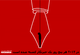

پذيرش > اخبار > ٣ می ٢٠١٢ (١٤ اردیبهشت ١٣٩١ ) روز جهانی آزادی مطبوعات مبارک باد


 ٣ می ٢٠١٢ (١٤ اردیبهشت ١٣٩١ ) روز جهانی آزادی مطبوعات مبارک باد ٣ می ٢٠١٢ (١٤ اردیبهشت ١٣٩١ ) روز جهانی آزادی مطبوعات مبارک باد
14 اردیبهشت 1391 - - نسخه قابل چاپ
گزارشگران بدون مرز: به مناسبت ٣ می ٢٠١٢ (چهارده اردیبهشت ١٣٩١) روز جهانی آزادی مطبوعات، گزارشگران بدون مرز، خشونت دهشتناک علیه روزنامهنگاران و شهروند وبنگاران را ، محکوم میکند. با کشته شدن ٢١ روزنامهنگار و ٦ شهروند وبنگار و شهروند خبرنگار از آغاز سال میلادی ٢٠١٢ ، هر پنج روز یک فعال اطلاعرسانی، از جمله در مناطق درگیری هم چون سومالی و یا سوریه به قتل رسیده است.
گزارشگران بدون مرز در این روز فهرست به روز شدهی ٤١ نفر از دشمنان آزادی اطلاعرسانی را منتشر میکند.
" جنایات ما نباید شاهدی داشته باشد"، " هیچ صدایی جز صدای ما نباید به گوش برسد" این دستور روز دشمنان آزادی اطلاعرسانی است : رژیمهای اقتدارگرا و گروههای مخالف آزادی اطلاعرسانی . چهار ماه اغاز سال میلادی ٢٠١٢ با سرکوب جنبشهای اعتراض مردمی در برخی از کشورهای عربی، ایجاد خفقان برای مخالفان سیاسی، و به سکوت وادارکردن منتقدان در دیگر کشورهای جهان، به ویژه برای حرفهکاران رسانهها آغاز سالی پرخشونت بود.
دشمنان تازهی آزادی اطلاع رسانی
نخستین فصل سال نشان داد که برخی از این دشمنان آزادی اطلاع رسانی همچون بشارال اسد سوریه و شبه نظامیان اسلامی الشباب در سومالی میتوانند به قصاب بدل شوند.
اگر جنبشهای مردمی در سال ٢٠١١ توانستند برخی از درندگان آزادی اطلاعرسانی را سرنگون و یا از قدرت برکنار کنند، اما متاسفانه نتوانستند تعداد دشمنان آزادی اطلاعرسانی را کاهش دهند. شش درندهی تازه به فهرست این " باشگاه" هراسناک افزوده شده است. گروه اسلامی بوکو حرام که به دهشتافرینی در نیجریه پرداخته است، شورای عالی نظامی مصر که متاسفانه در نقض آزادی اطلاعرسانی پا جای پای حسنی مبارک، دیکتاتور برکنار شدهی مصر گذاشته است. وزیر اطلاعات، پست و ارتباطات دولت فدرال موقت سومالی، که مسوول سرکوب و ایجاد رعب و وحشت در میان مطبوعات است، وصیف طالیبوف رهبر قدرتمند نخجوان درجمهوری اذربایجان، سرویسهای اطلاعاتی پاکستان، و در آخر کینگ جونگ اون، که پس از مرگ پدر بزرگ و پدرش، وارث خاندان دشمنان آزادی اطلاع رسانی در کره شمالی است.
تازهگی دیگر، شاخص داشتن دو دشمن آزادی اطلاعرسانی در برخی از کشورهاست. شش کشور در چنین وضعیتی قرار دارند. در سومالی که وزیر اطلاعات،پست و ارتباطات دولت فدرال موقت به شبه نظامیان گروه اسلامی الشباب پیوسته است. در پاکستان که سرویسهای اطلاعاتی در کنار طالبان و با هم حرفه کاران اطلاعرسانی را هدف قرار میدهند. در جمهوری اذربایجان، وصیف طالیبوف رهبر قدرتمند نخجوان که این منطقه را به آزمایشگاه روشهای سرکوب عمومی الهام علیاف بدل کرده است. در روسیه ولادیمیر پوتین و سگ زنجیریاش رمضان قدریف که مقام ریاست جمهوری چچن را یدک میکشد، هر دو با هم در خشونت رفتاری و گفتاری خبرهاند. در سرزمینهای خودمختار فلسطین روزنامهنگاران قربانی سختگیریهای، نیروهای امنیتی دولت خودمختار از یک سو و دولت حماس از سوی دیگر هستند. و در آخر ایران که ولیفقیه سید علی خامنهای و رئیس جمهور محمود احمدنژاد، علیرغم همه اختلافاتشان اما در مورد سرکوب مطبوعات اجماع دارند. جمهوری اسلامی ایران پس از اریتره و چین، و پیش از ترکیه و سوریه، قرار دارد که با هم باشگاه بزرگترین زندانهای جهان برای روزنامهنگاران را تشکیل میدهند.
برخی دیگر از رهبران، همچون رئیس جمهور جیبوتی، اسماعیل عمر و روسای دولتهای سودان و اوگاندا، عمرالبشیر و یووری موسوینی دم دروازهی فهرست درندگان آزادی اطلاعرسانی قرار گرفتهاند. یمن که سالی پر از خشونت را پشت سر نهاد، پس از برکناری علی عبدالله صالح از قدرت، تحت مراقبت قرار دارد، رئیس جمهوری برمه میتواند در سال ٢٠١٢ بعنوان رهبری که دوران گذار و گشایش را در کشورش آغاز کرده است، از این فهرست خارج شود.
ارتش انقلابی کلمبیا (فارک) مدت زمان زیادی است که در کنار دیگر گروههای شبه نظامی در این کشور در فهرست دشمنان آزادی اطلاعرسانی قرار دارد. این گروه که اخیرا به شدت تضعیف شده است، بیش از هر زمان دیگری روزنامهنگاران را هدف حملات خود قرار داده است. نام این گروه در روزهای اخیر با خبر ناپدید شدن خبرنگار فرانسوی رومئو لانگولا ، مجددا بر سر زبانها افتاده است. فارک رسما خبر ربودن خبرنگار را تائید نکرده است. گزارشگران بدون مرز در این روز شجاعت این خبرنگار را میستاید و همبستگی خود را با خانوادهی وی اعلام می کند.
آسیب پذیری حرفهکاران تصویر و شهروند خبرنگاران
بر تعداد روزنامهنگاران مستقل برای پوشش خبری در مناطقی که درگیریهای نظامی وجود دارد، افزوده شده است. در چهارماه نخستین سال میلادی این گروه هزینه سنگینی برای تلاش خود پرداخت کردهاند. گزارشگران بدون مرز به ویژه ارجگذار تلاش شهروند خبرنگاران است، که اخرین سنگربانان آزادی اطلاع رسانی هستند. در موقعیتهایی که دولتها پنهان از نگاه بیرونی سرکوب را پیش میبرند. فیلمبردار و یا عکاس هدفهای نخستین رژیمهای سرکوبگر هستند، چرا که این رژیمها بهتر از هر کس قدرت اطلاعرسانی با تصویر را میدانند. در پی رویداهای بهار عرب و با در نظر گرفتن تغییرات گسترده در برخی از این کشورها ، گزارشگران بدون مرز تصمیم گرفته است که دولتهای جوان این کشورها را در مسیر رسیدن به دمکراسی همراهی کند. پس از بازگشایی دفتر تونس، سازمان برای بازسازی مطبوعات ازاد و کثرتگرا دفتر نمایندگی خود را در لیبی بازگشایی خواهد کرد.
با این همه، این " بهاران" هنوز از مژدههایی که دادهاند، فاصله دارند. ما براین باوریم که باید نسبت به فریبالقایی دولتهای که هر جنبش اعتراضی را " تروریست" مینامند از یک سو و در برابر گرایشات آزادی ستیز برخی از گروههای معترض از سوی دیگر بسیار محتاط بود.
امنیت روزنامهنگاران و اسناد جهانی
در برابر گسترش خشونتی که امروز روزنامهنگاران را هدف قرار داده است. گزارشگران بدون مرز :
رسانهها را برای حفاظت از روزنامهنگاران، روزنامهنگاران حقالتحریهای، مترجمان و راهنمایان و روزنامهنگاران محلی و همچنین حفاظت از منابع اطلاعات و مصاحبه شوندگان، به تامل بیشتر دعوت میکند.
دولتها را به عملی کردن موازین موجود در قوانین جهانی ناظر بر حفاظت از روزنامهنگاران دعوت میکند. در اینباره باید به فوریت بیلانی مشخص از چگونگی اجرای قعطنامهی ١٧٣٨ شورای امنیت سازمان ملل ارائه شود. این امر به ویژه پنج سال پس از تصویب این قعطنامه ضروری است. دولتها باید در این باره مسوولیت پذیر باشند و اجرای بندهای ٦ و ٧ این قعطنامه را تضمین کنند. این موازین در برگیرندهی الزاماتی پیشگیرانه و تنبیهی برای پایان دادن به مصونیت از مجازات در نقض حقوق بینالمللی علیه روزنامهنگاران هستند.
اصلاح اساسنامه دادگاه جنایی بینالمللی برای قرار دادن روزنامهنگاران در چارچوب گروههای غیرنظامی، هممانند کادرهای سازمانهای فعال در امر مساعدت بشر دوستانه.
دولتها را دعوت میکند که به فوریت، به نقشه عملی و مصوبهی سازمان یونسکو در مارس ٢٠١٢ برای حفاظت از امنیت روزنامهنگاران و مبارزه با مصونیت از مجازات بپیوندند.
ارسال به
بالاترین
،
توییتر
،
فریندفید
،
فیسبوک
در همين بخش :
 پروین ذبیحی برنده جایزه حقوق بشری سازمان غيردولتى اتريشى سودويند شد پروین ذبیحی برنده جایزه حقوق بشری سازمان غيردولتى اتريشى سودويند شد
پخش کارت پستال و بروشور در روز جهانی زن در تهران
تمدید زمان برای امضای بیانیهی جمعی از فعالان زن به مناسبت هشت مارس
مجوزی که در نطفه خفه شد
بیش از 2000 امضا در اعتراض به تبعیض های آموزشی به مجلس تحویل داده شد
ديگر بخش ها :
طرح یک میلیون امضا
|
مقالات
|
سایت نوشته ها
|
اخبار
|
گزارش كمپين
|
گفت و گو
|
علیه سکوت
|
كوچه به كوچه
|
نامه های شما
|
گزارش ویژه
|
گفتگو با اعضا
|
ویژه سالگرد کمپین
|
تصویر برابری
|
دل آرام علی
|
تریبون
|
مقالات
|
تاریخ شفاهی
|
خارج از چارچوب
|
کتابخانه
|
درباره کمپین
|
کمپین در شهرها
|
کمپین در بند
|
صدای تغییر
|
ویژه 22 خرداد
|
لایحه حمایت از خانواده
|
گالری
|
عشا مومنی
|
امیر یعقوبعلی
|
خدیجه مقدم
|
راحله عسگری زاده و نسیم خسروی
|
پروین اردلان،جلوه جواهری، مریم حسین خواه، ناهید کشاورز
|
زینب پیغمبرزاده
|
سعیده امین، سارا ایمانیان، محبوبه حسین زاده، ناهید کشاورز و همایون نامی
|
احترام شادفر
|
نسیم سرابندی زاده،فاطمه دهدشتی
|
وبلاگ مهمان
|
پرونده خرم آباد
|
دستگیری ها
|
مریم مالک
|
پرستو اللهیاری
|
مهرنوش اعتمادی
|
سمیه رشیدی
|
Other Languages
|
همراهان
|
«فراخوان کمپین ده روز با بهاره هدایت»
| English
|